数据库系统 ¶
Chap 1 Introduction¶
1.2 Definition¶
[Definition] Database:a collection of interrelated/integrated and persistent data
[Definition] Database Management System(DBMS):A set of programs used to access,update and manage the database
Properties of DBMS:
- efficiency and scalability( 可扩展性 )
- independency(physical/logical)
- integrity( 完整性 ) and security
- concurrent( 并发 ) access and robustness( 鲁棒性 )(recovery)
1.4 Levels of data abstraction¶
- Physical level:files
- Logical level:relationship
- View level:details of data viewed by the users(detail hidden) e.g. age for course selection
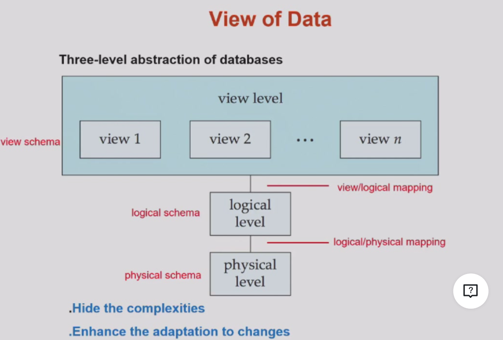
schemas( 模式 ) and instances( 实例 )
schema:the structure on different level(Physical/Logical/Sub-schema)(表头)
instance:the actual content
Independence
- Physical:change of logical schema rarely affects the physical schema(unless some data are missed)
- Logical:harder to achieve since the view schema are strongly influenced by the logical schema(change of logical scheme immediately change the data in the view scheme)
1.5 Data models¶
[Definition] Data model:a collection of conceptual tools for describing——data structure/relationship/semantic( 语义 )/constraint
Different types:
- Entity(object)-Relationship model(E-R)
- Relational model
- Object-oriented model
- Semistructured data model (XML)
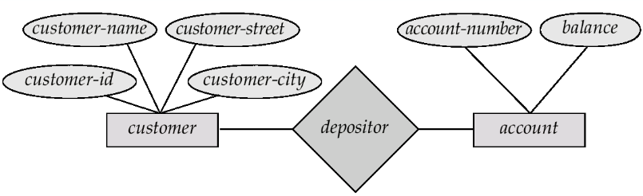
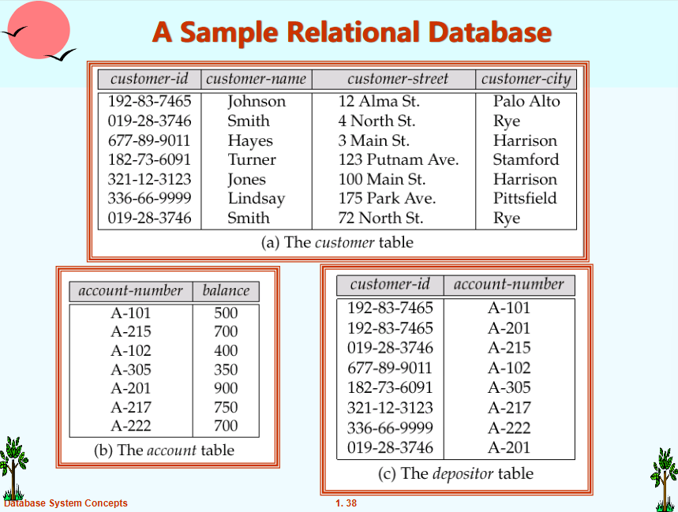
1.6 Database Language¶
- Data definition language(DDL)
- Data manipulation language(DML)
- Data control language(DCL)
(1)DDL
generate tables stored in data dictionary
| SQL | |
|---|---|
1 2 3 4 | |
Insert/Delete/Update/Retrieve data
query language (3)SQL(DDL+DML+DCL)
| SQL | |
|---|---|
1 2 3 4 | |
1.7 Database Users¶
- naive users:interface interact
- application programmer:SQL calls
- sophisticated users:analytical processing/data mining
- specialized users
1.8 Database Administrator(DBA)¶
a good understanding of the enterprise's info resources and needs
1.9 Transaction(operation) Management( 事务管理 ) ¶
atomicity,consistence,isolation,durability(ACID)
concurrency-control manager(并发控制管理器)
1.10 DBMS structure¶
1.storage manager
responsible for efficient storing,retrieving,updating data
2.query processor
DDL interpreter,DML compiler,query processing
query -> parser and translator -> relational algebra expression -> optimizer -> execution plan -> evaluation engine -> output
Optimization:cost estimation
Application architectures:
two-tier:app -> db
three-tier:browser -> web -> db
Chap 2 Relational Model¶
2.1 Definition¶
[Definition] relation:a table with rows and columns
[Comparison] relationship:an association among several entities
2.2 Basic Structure¶
given sets D1,...,Dn
a relation r is a subset of D1 x ... x Dn(Cartesian product)
e.g.dept_name = {Biology,Finance,History,Music}
building = {Watson,Painter,Packard}
budget = {50000,80000,90000,120000}
Then r = {(Biology,Watson,90000),(Finance,Painter,120000),(History,Painter,50000),(Music,Packard,80000)}is a relation over dept_name x building x budget(total 48 tuples)
(1)Attribute Types
domain:the set of allowed values(atomic) of each attribute(属性，表头的元素)
non-atomic value:multivalued/composite(混合的) attribute
e.g.tel:138xxx,139xxx(a string difficult to split)
null:a member of every domain
(2)Concepts
relation schema:the structure of the relation
e.g.(ID=string,name=string,salary=int)
R=(A1,...,An) is a relation schema where Ai is an attribute
relation instance:the snapshot of data in the relation
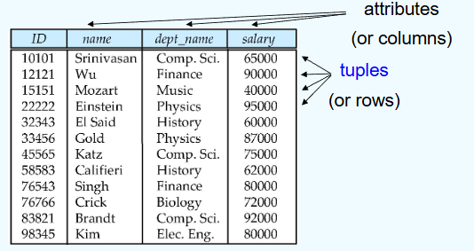
(3)Relations are unordered (4)Keys
唯一区分一个对象的一个或一些属性
superkey:a set of attribute sufficient enough to identify a unique tuple
candidate key:minimal superkey(cannot delete anyone)
primary key:candidate key defined by user
(5)Foreign key
Assume there exists relation r and s: r(A, B, C), s(B, D), we can say that attribute B in relation r is foreign key
参照关系中外码的值必须在被参照关系中实际存在或为null(不能填不存在的值，如填入一个不存在的专业)
(6)Schema Diagram(模式图)
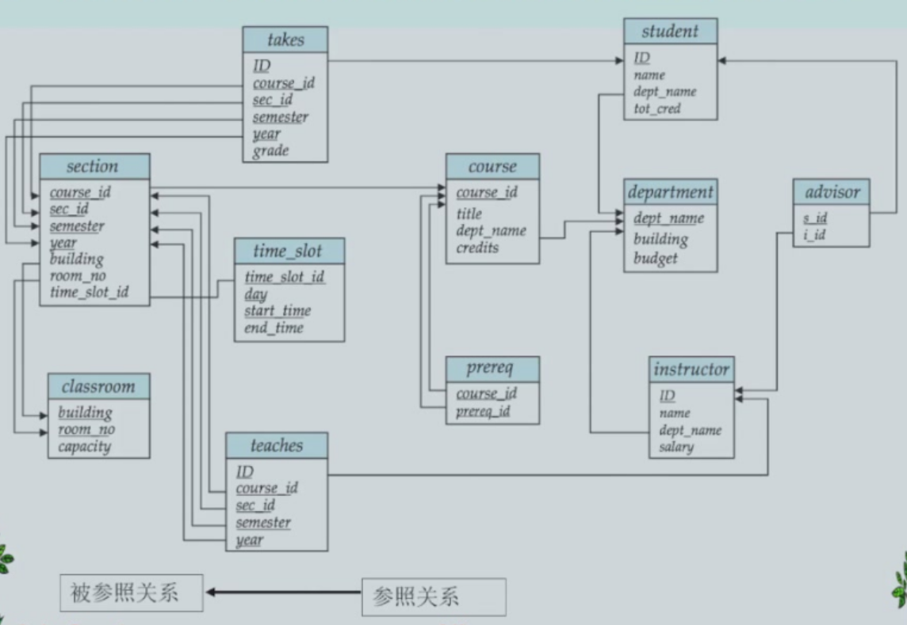
(7)Query language:language in which user requests info from the db
2.3 Relational Algebra¶
Six basic operations
(1)Select \(\sigma\)
\(\sigma_{A=B \wedge D>5}(r)\)
选择满足A=B且D>5的关系
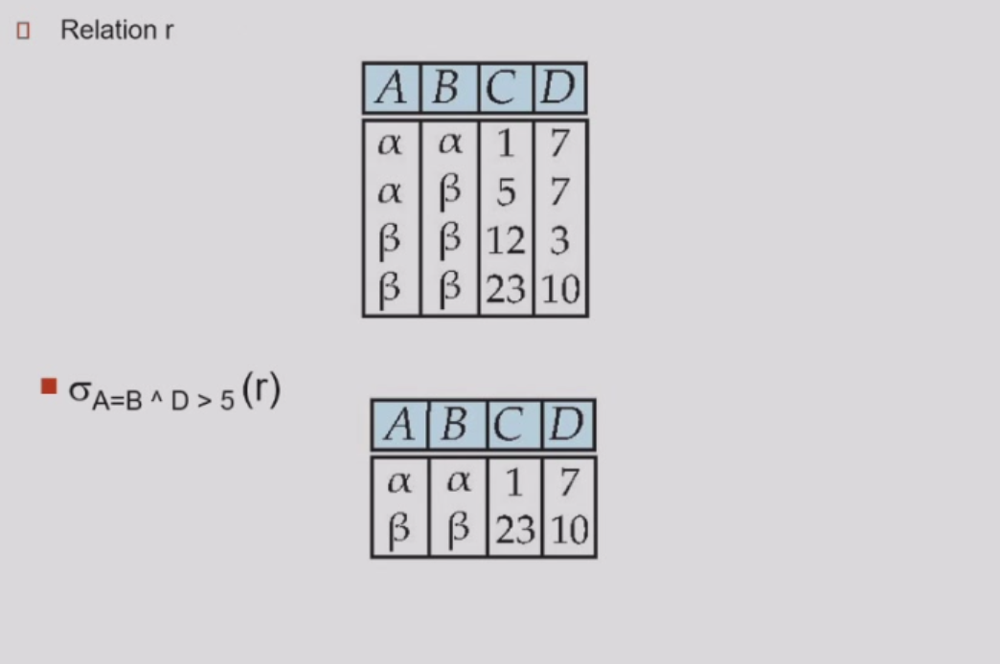
Notation:$\sigma_p(r)=\left{t|t\in r \ and \ p(t)\right}\ p:查询条件 $ e.g.\(\sigma_{dept\_ name='Finance'}(department)\)(2)Project \(\Pi\) 投影 Notation:\(\Pi_{A_{1},...,A_{k}}(r)\)
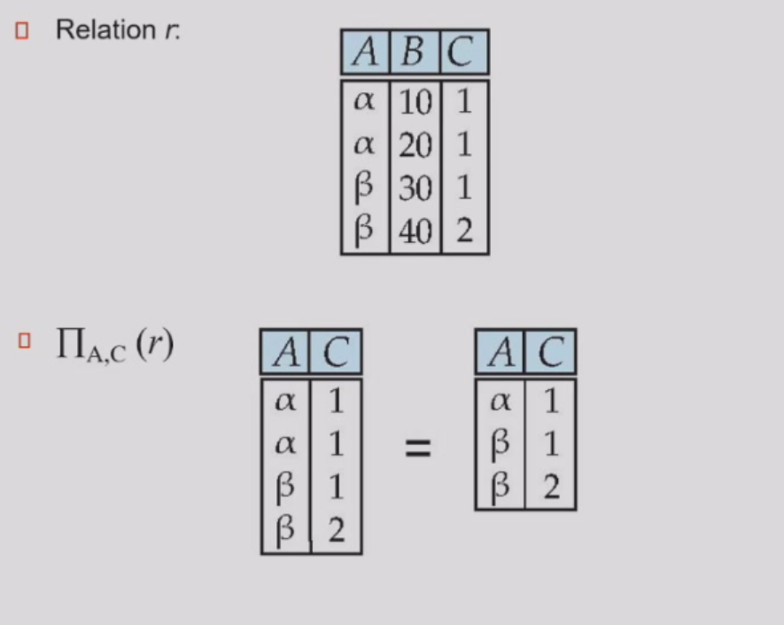
投影A,C关系(注意去重)
(3)Union \(\cup\)
Notation:\(r\cup s=\left\{t|t\in r \ or \ t \in s\right\}\)
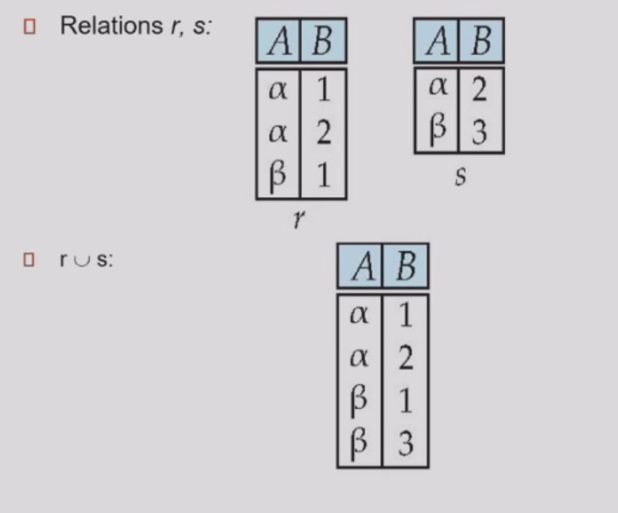
可并条件：r,s有相同的arity(元数)(属性个数);属性的域必须是compatible(可容的)
e.g.\(人名\cup 公司名\) (4)Set difference \(-\)
Notation:\(r-s=\left\{t|t\in r \ and \ t \notin s\right\}\)
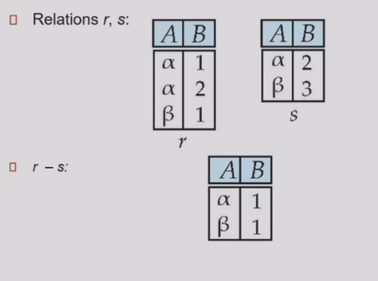
可做差条件同Union
(5)Cartesian product \(\times\)
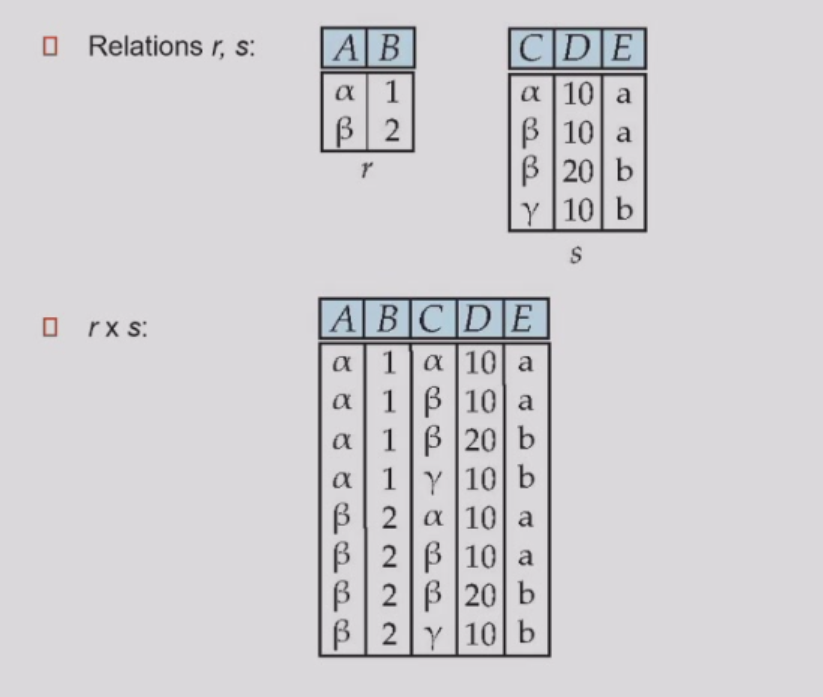
Composition of operations:e.g.\(\sigma_{A=C}(r\times s)\) (6)rename \(\rho\) Notation:\(\rho_{x}(E)\)
将E改名为x，E可以是关系代数的结果
\(\rho_{x(A_1,...,A_n}(E)\) 将n个属性分别改名
查询表达式与查询优化
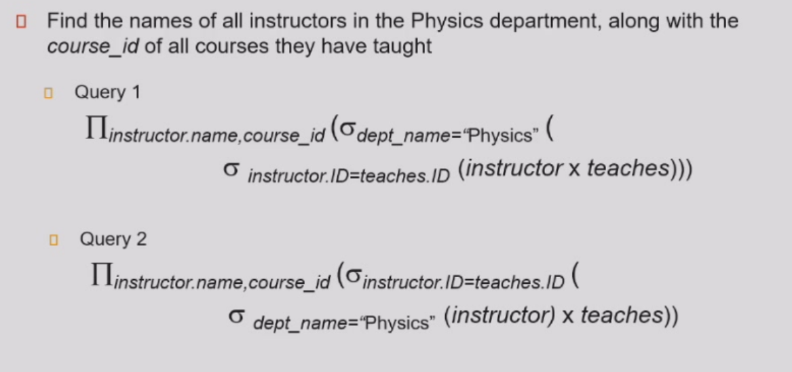
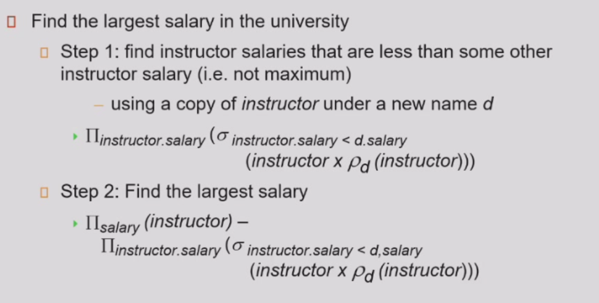
Problem:六种基本关系操作没有统计功能
Additional operations(不增加表达能力，只是方便书写)
(7)Set intersection \(\cap\)
\(r \cap s = r-(r-s)\) (8)Natural join \(r\bowtie s\) 将r与s公共属性相同的连接在一起
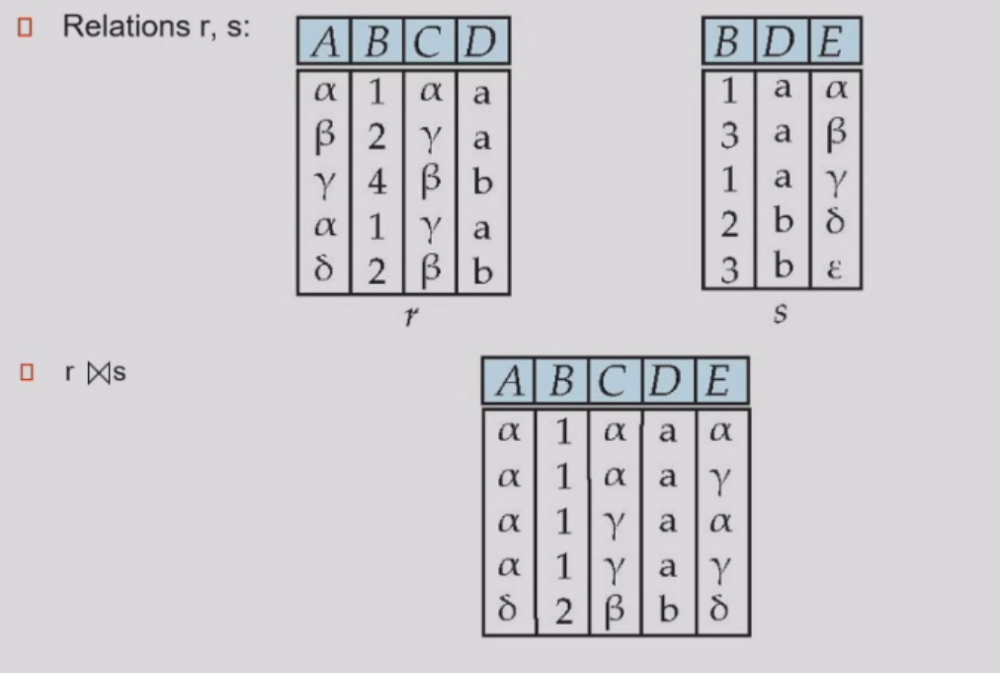
满足交换律和结合律
Theta join:条件连接
\(r\bowtie_{\theta} s = \sigma_{\theta}(r\times s)\)
(9)Outer join
保留一边没有连接的信息，另一边缺少的属性置为null
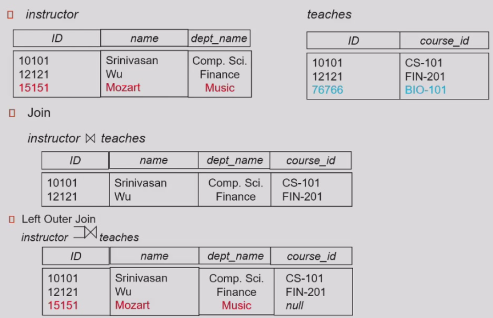
left/right/full outer join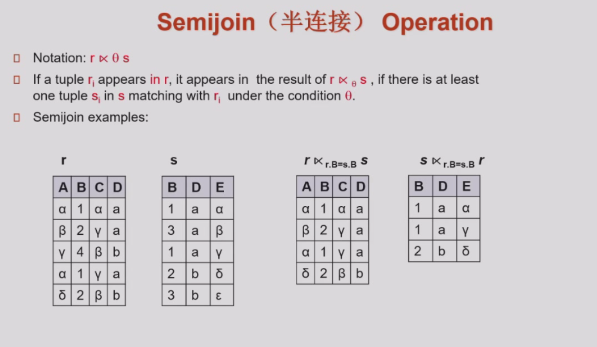
等价于条件筛选
(10)Assignment ⬅
赋值操作，用于避免表达式过长
(11)Division \(\div\) \(s \subseteq r\)且满足\((r \div s) \times s \subseteq r\)
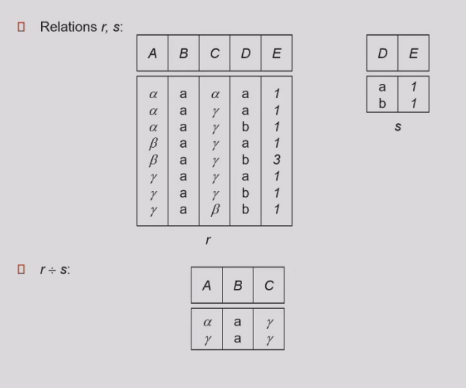
2.4 Extended Relational-Algebra-Operations¶
增加表达能力的扩展关系代数
(1)Generalized Projection
(2)Aggregate Function 统计函数
avg,min,max,sum,count(非空值的个数)
\(_{G_1,...,G_n}\mathcal{G}_{F_1(A_1)...F_n(A_n)}(E)\)
\(G_i\)表示分组属性(\(G_i\)为空即将整个表看成一组),\(F_i\)表示统计函数
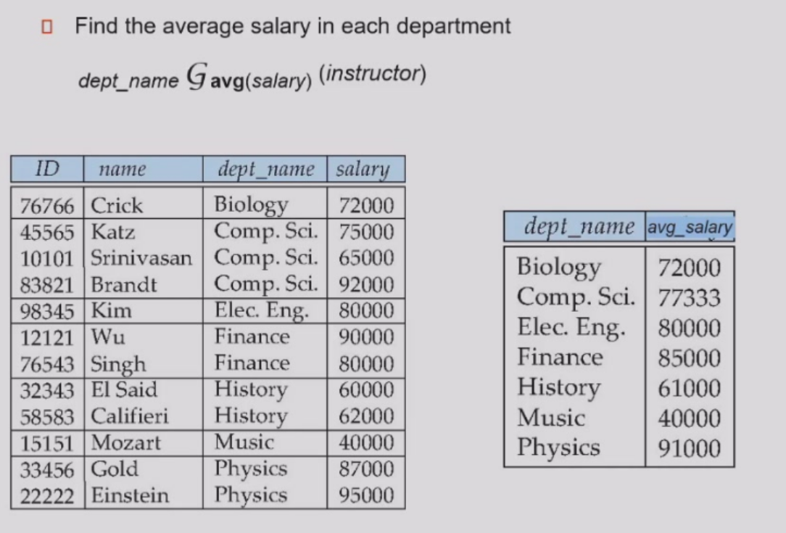
\(as\)用于重命名2.5 Modification¶
- Deletion
- Insertion
- Updating
2.6 Multiset¶
Multiset( 多重集 ) relational algebra retains duplicates,to match SQL semantics
引入原因：去除重复元素代价过高
设某一相同表达式在r中出现m次，在s中出现n次
- selection: 保留所有重复
- projection: 不去重
- cross product: 出现 \(m*n\) 次
- union:\(m+n\)
- intersection:\(min(m,n)\)
- difference:\(max(0,m-n)\)
Chap 3 Introduction to SQL¶
3.1 Data Definition Language(DDL)¶
(1)Domain types in SQL
| SQL | |
|---|---|
1 2 3 4 5 6 7 8 9 10 | |
| SQL | |
|---|---|
1 2 3 4 5 6 7 8 9 10 11 12 | |
| SQL | |
|---|---|
1 2 3 | |
| SQL | |
|---|---|
1 2 3 4 5 6 7 8 9 10 | |
| SQL | |
|---|---|
1 2 3 4 5 | |
3.2 Basic Structure of select¶
\(\Pi_{A_1,...,A_n}(\sigma _{P}(r_1\times...\times r_m))\)
| SQL | |
|---|---|
1 2 3 | |
| SQL | |
|---|---|
1 2 3 4 | |
| SQL | |
|---|---|
1 2 3 4 5 6 7 | |
| SQL | |
|---|---|
1 2 | |
| SQL | |
|---|---|
1 2 3 4 5 6 7 8 9 10 11 12 13 14 | |
'_' matches character
| SQL | |
|---|---|
1 2 3 | |
| SQL | |
|---|---|
1 2 | |
| SQL | |
|---|---|
1 | |
3.3 Set Operation¶
| SQL | |
|---|---|
1 2 3 | |
b. Find the total sum of all loan amounts in the bank.
c. Find the names of all branches that have assets greater than those of at least one branch located in “Brooklyn”.
3.4 Aggregate Function¶
avg,min,max,sum(null = 0),count
| SQL | |
|---|---|
1 2 | |
| SQL | |
|---|---|
1 2 3 | |
| SQL | |
|---|---|
1 2 3 4 | |
| SQL | |
|---|---|
1 2 | |
3.5 Null Values¶
null signifies the value unknown or the value does not exist
5 + null = null
null > 100 = null
| SQL | |
|---|---|
1 | |
unknown or false/unknown = unknown
true/unknown and unknown = unknown
false and unknown = false
not unknown = unknown
3.6 Nested( 嵌套 ) Subqueries ¶
(1)Set membership
| SQL | |
|---|---|
1 2 3 4 5 6 | |
| SQL | |
|---|---|
1 2 3 4 | |
| SQL | |
|---|---|
1 2 3 4 5 6 7 8 | |
| SQL | |
|---|---|
1 2 3 4 5 6 7 8 9 10 11 | |
| SQL | |
|---|---|
1 2 3 4 5 | |
*3.8 With Clause¶
3.9 Modification of Database¶
(1)Deletion
| SQL | |
|---|---|
1 2 3 4 5 6 7 | |
| SQL | |
|---|---|
1 2 | |
| SQL | |
|---|---|
1 2 3 4 5 | |
Chap 4 Intermediate SQL¶
4.1 Join Relations¶
inner join,left/right outer join,full outer join
| SQL | |
|---|---|
1 2 3 4 | |
4.2 SQL Data Types and Schemas¶
User-defined types¶
| SQL | |
|---|---|
1 2 | |
Domains¶
| SQL | |
|---|---|
1 2 3 4 | |
Large object¶
blob(binary large object):tinyblob,blob,mediumblob,largeblob
clob(character large object)
when a query returns a large object,a pointer is returned.
4.3 Integrity Constraints¶
Single Relation¶
not null,primary key,unique,check(P),foreign key
| SQL | |
|---|---|
1 2 3 4 5 6 | |
Referential¶
| SQL | |
|---|---|
1 2 3 4 5 6 7 8 | |
Violation during transactions¶
| SQL | |
|---|---|
1 2 3 4 | |
Complex Check Clause¶
| SQL | |
|---|---|
1 2 | |
Assertion¶
| SQL | |
|---|---|
1 2 3 4 5 6 7 8 | |
4.4 Views¶
- hide complexity
- logic independence
- authority management
| SQL | |
|---|---|
1 2 3 4 5 6 7 8 9 10 11 | |
| SQL | |
|---|---|
1 2 3 | |
*Materialized view¶
create a physical table containing all the tuples in the result of the query
| SQL | |
|---|---|
1 | |
Logical data independence¶
S(a,b,c) -> S1(a,b) & S2(a,c)(primary key a)
How to realize data independence
| SQL | |
|---|---|
1 2 3 4 5 6 7 8 9 | |
4.5 Indexes¶
Indices are data structures used to speed up access to records with specified values for index attributes(using B+ Tree)
| SQL | |
|---|---|
1 | |
4.6 Transactions¶
atomic:either fully executed or rolled back as if it never occurred
ended by commit or rollback
| SQL | |
|---|---|
1 2 3 4 5 | |
根据业务需求定义
booking and paying,one transaction or two
长事务占用资源，rollback -> complement transaction
4.7 ACID Properties¶
- Atomicity
- Consistency
- Isolation
- Durability:after a transaction completes,the changes it has made to the db persist,even if the system failures.
4.8 Authorization¶
forms of authorization of the db
- select
- insert
- update
- delete
forms of authorization to modify the schema
- create
- aleration
- drop
- index
- create view
| SQL | |
|---|---|
1 2 3 4 5 6 7 8 | |
Role¶
权限的集合
| SQL | |
|---|---|
1 2 3 4 5 6 | |
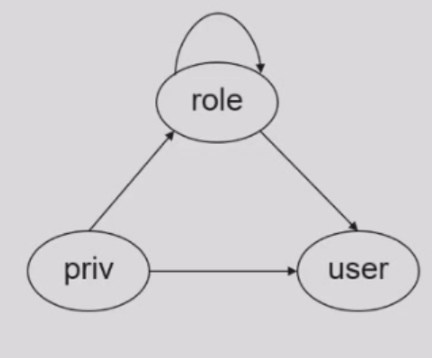
| SQL | |
|---|---|
1 2 3 4 5 6 7 8 9 10 | |